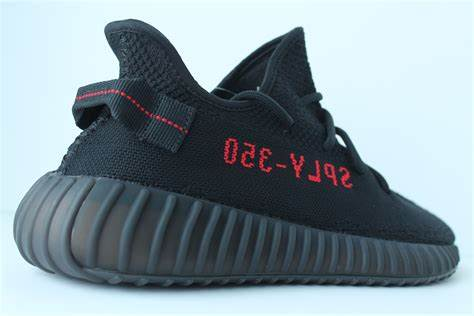
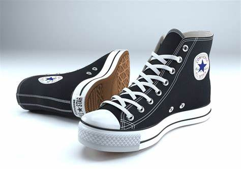
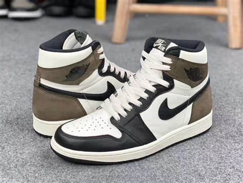

Sneakers are shoes primarily designed for sports or other forms of physical exercise, but which are now also widely used for everyday casual wear. Since their popularization by companies such as Converse, Nike and Spalding in the mid 20th century, they have become attire, with variety growing in many global markets exponentially. Like other parts of the global clothing industry, manufacture of shoes is heavily concentrated in Asia with nine in ten shoes produced in that region.

The past few years have seen “athleisure” become one of the most prominent trends in mainstream fashion. When Kanye first designed Yeezys for Nike, he established a clear-cut, neutral-hued aesthetic that other shoe designers have tried to emulate, with varying degrees of success. Today, one lucky Los Angeles resident will get a pair of the coveted kicks—for free. Dose has hidden a pair of Yeezys around the city. We’ll be giving clues on Snapchat (dosenow) on how to find them, and the first person to snag the shoes gets them for keeps.

Converse All Stars, also known as Chuck Taylors, are casual shoes that have played a significant role in pop culture for decades. Initially designed as a basketball shoe in the early 1900s, the soft cotton and rubber-soled style has remained largely unchanged for the last century.

The first-ever pair of Jordans (Air Jordan 1) dropped in 1984 and they remain a popular sneaker today. They retail starting under $100, while limited edition versions sell for thousands (and occasionally hundreds of thousands) of dollars